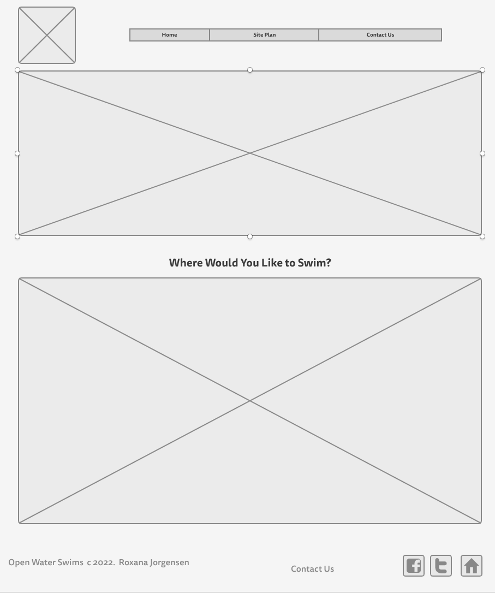
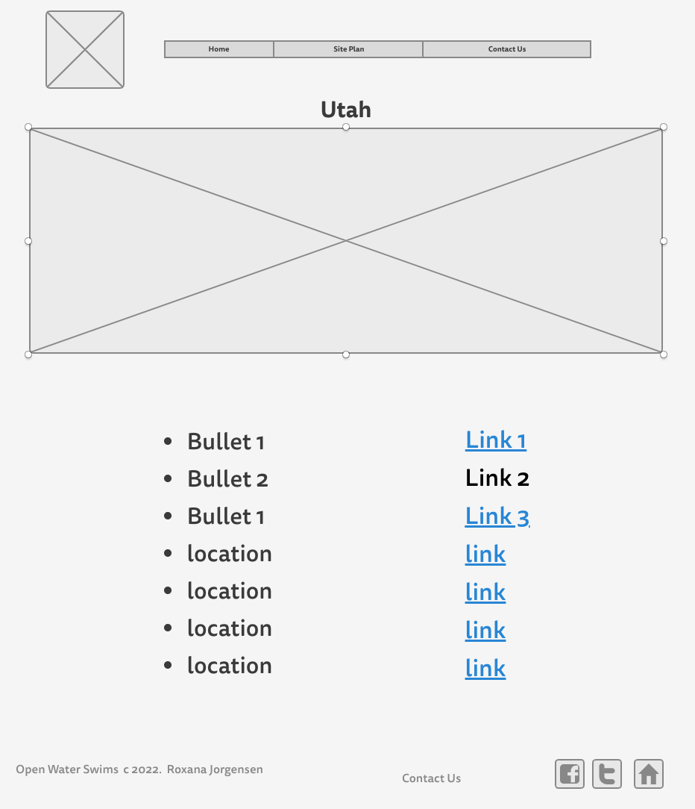
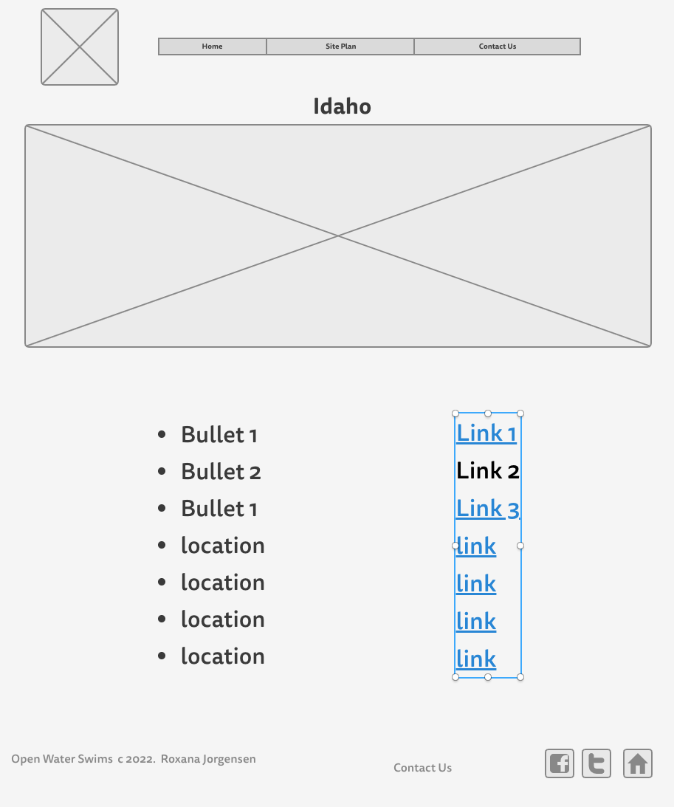
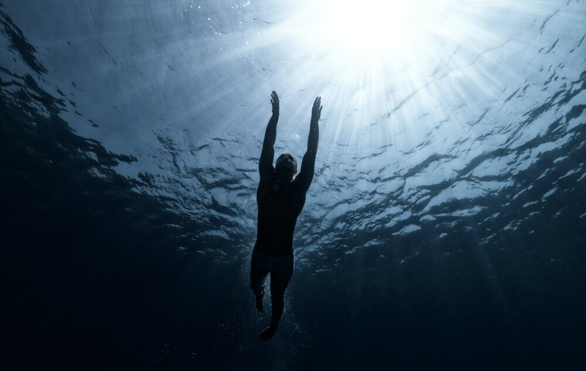
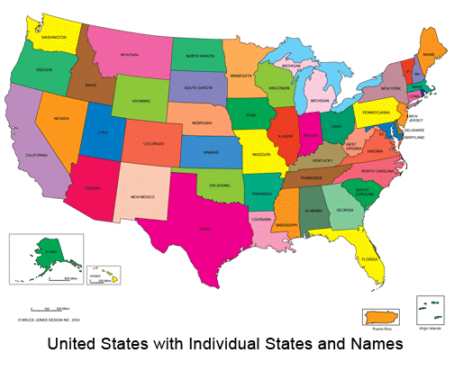

Overview
Purpose
Open Water Marathon is a guide to all of the open water marathons in the country. There are many amazing locations to swim an open water marathon. This is a one stop access to finding those those locations when you are planning your next marathon swim!
Audience
We are hoping to help everyone who enjoys swimming and who would like to continue swimming. For those who really enjoy swimming there are amazing opportunities to continue swimming. One of the best ways to continue swimming is to participate in Open Water Marathons or long swims. There are different levels of long open water swims around the United States with swims at different locations and different times of year. Hopefully you'll be able to find all the information you need to sign up for your next open water swim!
Branding
Website Logo
Style Guide
Color Palette
Palette URL:
https://coolors.co/00a6fb-b0e0fd-006494-003554-051923| Primary | Secondary | Accent 1 | Accent 2 |
|---|---|---|---|
| [#006494] | #B0E0FD="" | [#003554] | [#051923] |
Typography
Heading Font: Rock Salt
Paragraph Font: Roboto
Normal paragraph example
There are open water marathons all over the USA. This will be the one stop shop for your marathon needs.
Colored paragraph example
Open Water Marathons is the one stop place to find all open water long distance swims in the United States. There are so many beautiful open water locations to enjoy your long distance swim!
Navigation
Site Map
Wireframes
Home
So what is open water swimming? Basically open water Swimming is swimming anywhere that isn't a swimming pool. It is very enjoyable to swim in the beauty of nature. There are many opportunities for open water swims throughout the United States. There are also different lengths of open water swims. There are marathon swims and mile swims and anything in between. This is your one stop guide to all the open water swims in the United States of America. The swims are categorized by state. Each state has their own open water swims. They occur at different times of the year depending on location and weather conditions. Hopefully you will find the swim that best suits your needs and enjoyment!

Utah Open Water Swims
Utah is a beautiful state with lakes that are perfect for open water swimming. There are 3 open water swims in Utah. The great Salt Lake Open Water Swim, The Bear Lake Monster Swim and The Deer Creek Open Water Marathon Swim. These take place in the summer because the weather in the winter will be too cold for an open water swim. Please click on the links below for more information regarding each of the Utah open water swims!

Idaho Open Water Swims
Enjoy the beautiful open water in the state of Idaho! There are 4 open water swims in Idaho. They take place in the summer because of the colder winter weather in Idaho. The Idaho open water swims are the Long Bridge Swim, The Steve Omi Memorial Open Water Swim, the Great Moose Migration Swim, and the Coeur D'Aline Crossing Swim. Please click on the links below for more information regarding each of the wonderful swims in the state of Idaho!
  